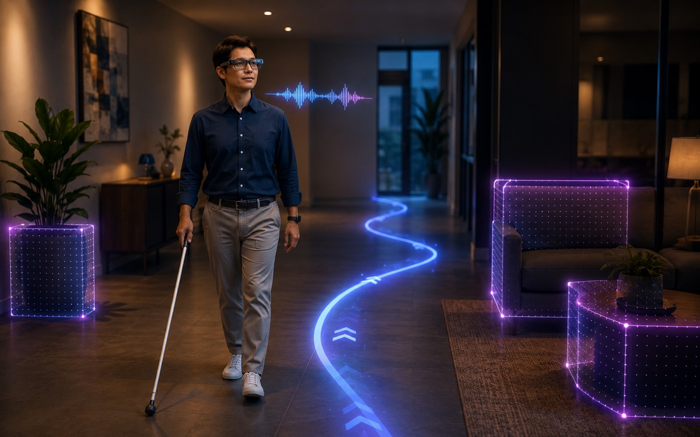

DRISTEE — Navigation Assistant for Visually Impaired
DRISTEE: a real-time cloud-based navigation assistant for visually impaired users combining depth-aware mapping, object/face detection, and voice-command NLP.
What is ahead?
Illustrative example
Authored walk-through of the documented pipeline. It shows how the system works, not recorded results.
The idea
DRISTEE (Depth-aware Recognition and Intelligent Scene Translation for Enhanced Engagement) is a real-time, cloud-assisted navigation assistant for visually impaired users, built under BRAC University's Research Seed Grant Initiative 2025. It fuses depth-aware scene mapping, object detection and facial recognition with voice-command NLP in a modular architecture, aiming to give a user personalized, low-latency spatial awareness — what's ahead, how far, and who's nearby — through natural spoken interaction rather than a screen.
Status
The project is ongoing, spanning model integration, implementation, and academic writing, and the research has now been submitted for journal publication. Method and evaluation details are held back until the review process concludes.
Tech stack & key skills
Core tools, methods and skills demonstrated in this project: